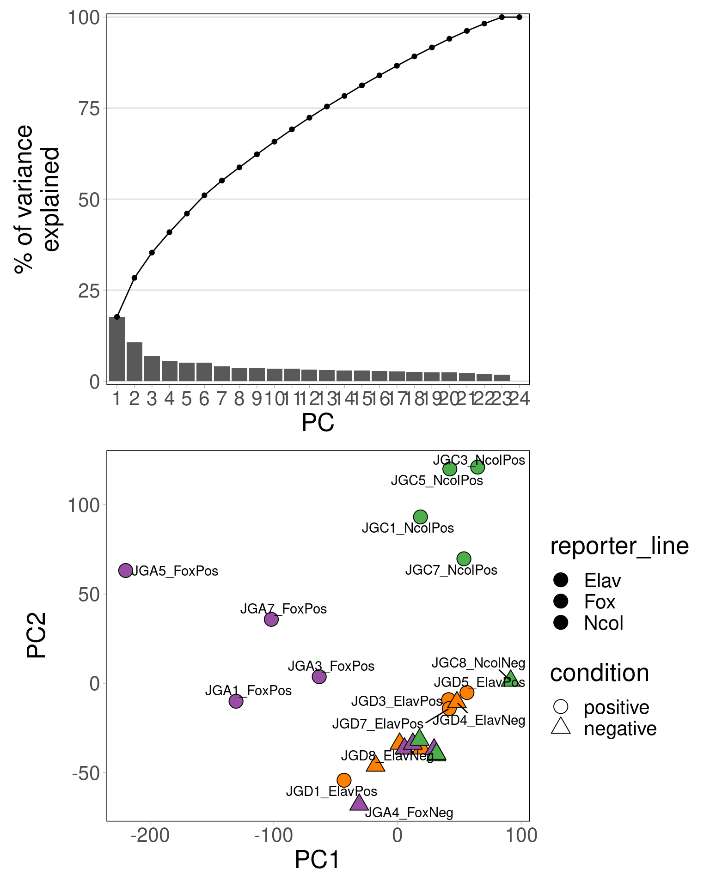
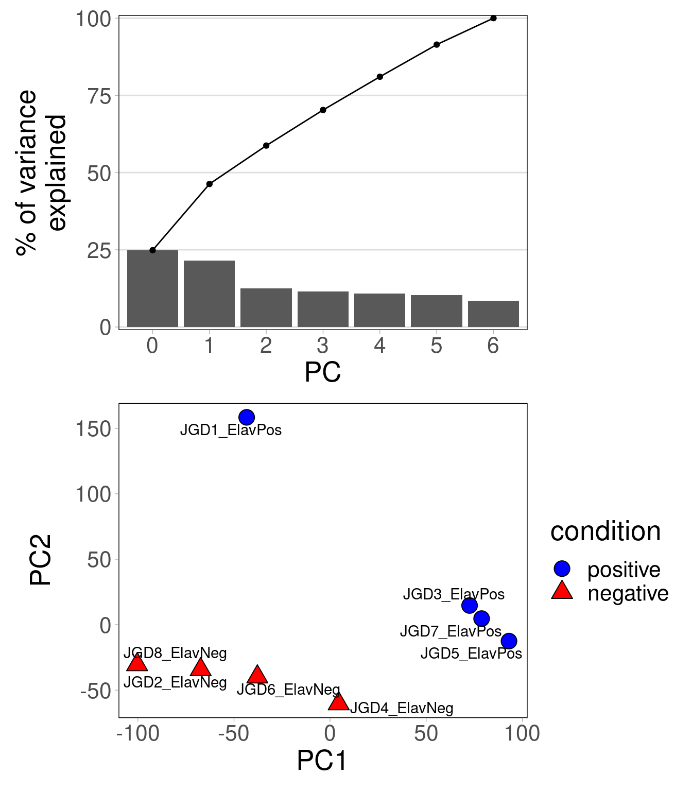
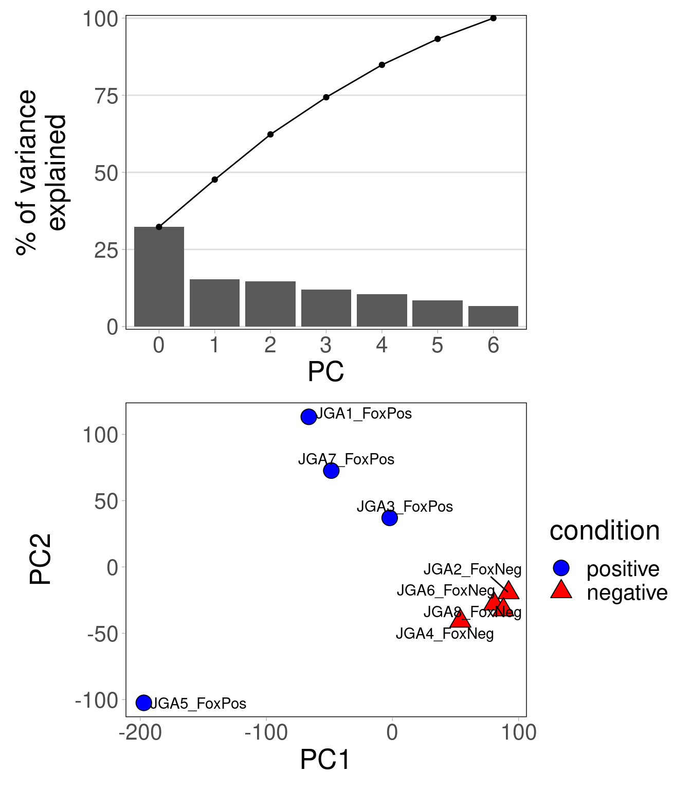
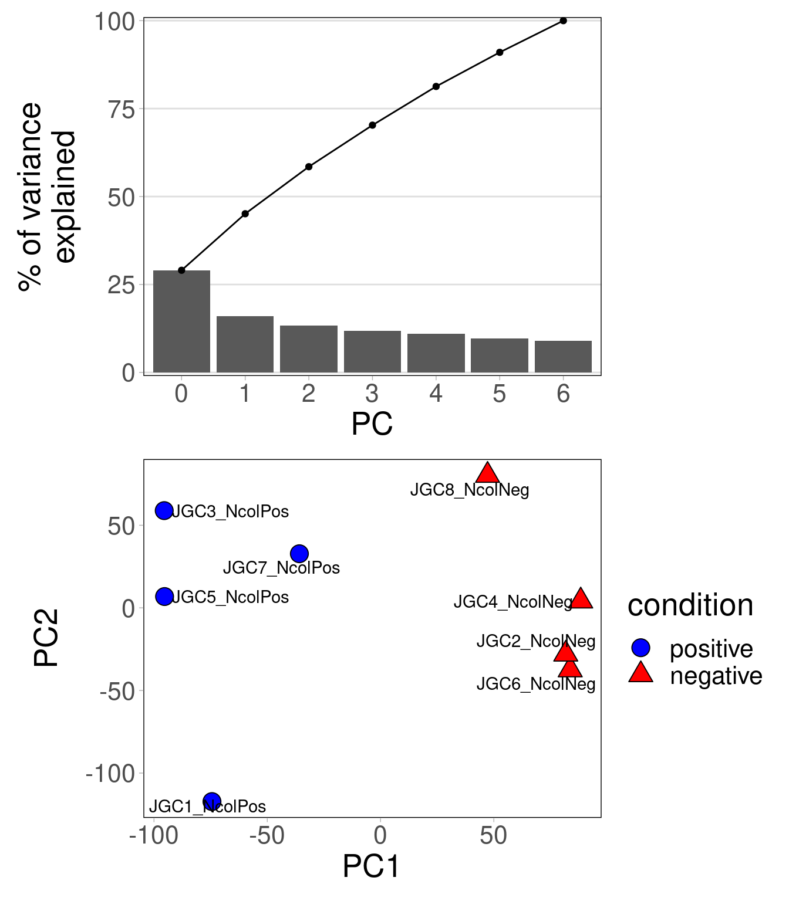
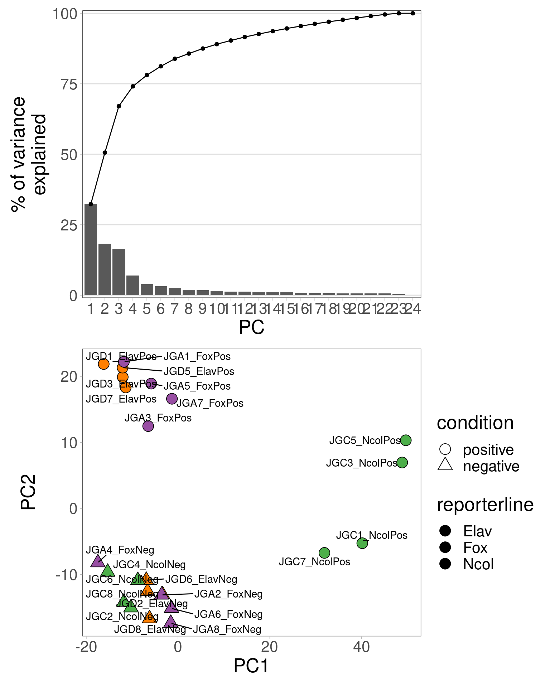

library(data.table)
library(ggplot2)
theme_py <- theme_light() + theme(
panel.grid.major = element_blank(),
panel.grid.minor = element_blank(),
panel.border = element_rect(colour = "black", fill = NA),
text = element_text(size=20),
strip.placement = "outside",
strip.text = element_text(size=20, color="black"),
strip.background = element_rect(fill="white")
)
theme_set(theme_py)
library(patchwork)
library(ggrepel)
library(ComplexHeatmap)
library(DESeq2)01. RNAseq
Setup
Load packages
Directories and inputs
dat_dir <- "RNASEQ_QUANTIFICATION"
res_dir <- file.path(dat_dir, "results")
fig_dir <- file.path(dat_dir, "plots")
for (newdir in c(res_dir, fig_dir))
dir.create(newdir, showWarnings = FALSE)Gene counts
Load expression data
# column data
des_fn <- file.path(dat_dir, "design_table.tsv")
des_dt <- fread(des_fn)
setnames(des_dt,"reporter_line","reporterline") # DESeq factors have problems with _
col_dt <- des_dt[,.(sample,reporterline,condition)]
col_dt[,reporterline:=factor(reporterline, levels=c("Elav","Fox","Ncol"))]
col_dt[,condition:=factor(condition, levels = c("negative","positive"))]
setorder(col_dt, reporterline, condition)
condition_cols <- c("positive"="blue","negative"="red")
line_cols = c("Elav" = "#ff7f00", "Fox" = "#984ea3", "Ncol" = "#4daf4a")
col_df <- copy(col_dt)
class(col_df) <- "data.frame"
rownames(col_df) <- col_df$sample
# count matrix
con_fn <- file.path(dat_dir, "raw_counts_rnaseq.tsv")
con_df <- read.table(con_fn, header = TRUE)
con_mt <- as.matrix(con_df[,rownames(col_df)])
rownames(con_mt) <- con_df$transcriptData for differential expression analysis
require(DESeq2)
dds <- DESeqDataSetFromMatrix(
countData = con_mt,
colData = col_df,
design = ~ condition + reporterline + condition:reporterline
)
saveRDS(dds, file.path(res_dir, "dds.rds"))Inspect genes expression distribution
# normalized accessibility distribution
con_dt <- as.data.table(con_mt, keep.rownames = "gene")
con_dt <- melt.data.table(con_dt, id.vars = "gene", variable.name = "sample", value.name = "norm_counts")
con_dt <- merge.data.table(con_dt, col_dt, by="sample")
setorder(con_dt, gene, condition, reporterline)
con_dt[,sample:=factor(sample, levels = unique(con_dt$sample))]
gp_exp <- ggplot(con_dt, aes(sample, log10(norm_counts), fill=reporterline)) +
geom_violin(scale = "width", alpha = 0.8, color = "black") +
geom_boxplot(width = 0.5, outlier.shape = NA, alpha = 0.8, color = "black") +
scale_fill_manual(values = line_cols, limits = force) +
scale_y_continuous(expand = expansion(mult = c(0,0.01))) +
labs(x="samples", y="gene counts") +
theme(
axis.text.x = element_text(angle = 90, vjust = 0.5, hjust=1),
legend.title = element_blank(), legend.position = "none"
)
var_dt <- con_dt[,.(var=var(norm_counts)),.(gene)]
gp_var <- ggplot(var_dt, aes(log10(var))) +
geom_density() +
scale_x_continuous(limits=c(-4,NA)) +
scale_y_continuous(expand = expansion(mult = c(0,0.01))) +
labs(x = "log10(expression variance)")
gp_pch <- gp_exp / gp_var + plot_layout(heights = c(2,1))
gp_pch
Use normalized log-transformed expression data
# normalize samples
dds <- readRDS(file.path(res_dir, "dds.rds"))
dds <- estimateSizeFactors(dds)
norm_mt <- counts(dds, normalized=TRUE)
# row normalize to bring genes to same range
norm_mt <- (norm_mt+10)/apply(norm_mt+10,1,median)
norm_mt <- log2(norm_mt)
# save
write.table(norm_mt, file.path(res_dir,"norm_expression.tsv"), sep="\t", row.names = TRUE, quote = FALSE)PCA
PCA on all samples
set.seed(1950)
pca_res <- prcomp(t(norm_mt), center = TRUE)
# variance explained
pca_var <- data.table(pct_var = round(((pca_res$sdev) ^ 2 / sum((pca_res$sdev) ^ 2)* 100), 2))
pca_var[,pct_cum:=cumsum(pct_var)]
pca_var[,PC:=factor(1:.N)]
gp_var <- ggplot(pca_var, aes(PC, pct_var)) +
geom_bar(stat = "identity") +
geom_line(aes(y = pct_cum, group = 1)) +
geom_point(aes(y = pct_cum)) +
scale_y_continuous(expand = expansion(0.01,0)) +
labs(y = "% of variance\nexplained", x = "PC") +
theme(panel.grid.major.y = element_line(size = 0.5))
pca_dt <- as.data.table(pca_res$x, keep.rownames = "sample")
pca_dt <- merge.data.table(col_dt, pca_dt, by="sample", sort=FALSE)
gp_bip <- ggplot(pca_dt, aes(PC1, PC2, fill=reporterline, shape=condition)) +
geom_point(size=5) +
scale_fill_manual(values = line_cols) +
scale_shape_manual(values = c("positive" = 21, "negative" = 24)) +
guides(fill = guide_legend(override.aes=list(shape=21))) +
geom_text_repel(aes(label = sample))
gp_var / gp_bip PCA per cell line
set.seed(1950)
gp_l <- lapply(names(line_cols), function(cl) {
pca_res <- prcomp(t(norm_mt[,grep(cl,colnames(norm_mt))]), center = TRUE)
# variance explained
pca_var <- data.table(pct_var = round(((pca_res$sdev) ^ 2 / sum((pca_res$sdev) ^ 2)* 100), 2))
pca_var <- pca_var[-nrow(pca_var)]
pca_var[,pct_cum:=cumsum(pct_var)]
pca_var[,PC:=factor(1:.N-1)]
gp_var <- ggplot(pca_var, aes(PC, pct_var)) +
geom_bar(stat = "identity") +
geom_line(aes(y = pct_cum, group = 1)) +
geom_point(aes(y = pct_cum)) +
scale_y_continuous(expand = expansion(0.01,0)) +
labs(y = "% of variance\nexplained", x = "PC") +
theme(panel.grid.major.y = element_line(size = 0.5))
# pca plot
pca_dt <- as.data.table(pca_res$x, keep.rownames = "sample")
pca_dt <- merge.data.table(col_dt, pca_dt, by="sample", sort=FALSE)
gp_bip <- ggplot(pca_dt, aes(PC1, PC2, fill=condition, shape=condition)) +
geom_point(size=5) +
scale_shape_manual(values = c("positive" = 21, "negative" = 24)) +
scale_fill_manual(values = condition_cols) +
guides(fill = guide_legend(override.aes=list(shape=21))) +
geom_text_repel(aes(label = sample))
gp_var / gp_bip
})
gp_l[[1]]
[[2]]
[[3]]
Marker genes
Identify marker genes
# gene markers by normalized expression
genes_high <- names(which(apply(norm_mt, 1, function(x) sort(x,decreasing=TRUE)[2])>1.5))
genes_vari <- names(which(apply(norm_mt, 1, function(x) var(x)>0.1)))
gene_marks <- intersect(genes_high, genes_vari)# gene markers by high FC + significant DEseq2 LTR test
dds <- readRDS(file.path(res_dir, "dds.rds"))
dds <- DESeq(dds, test="LRT", reduced=~1)estimating size factorsestimating dispersionsgene-wise dispersion estimatesmean-dispersion relationshipfinal dispersion estimatesfitting model and testingdds_res <- results(dds)
dds_qval <- dds_res$padj
names(dds_qval) <- rownames(dds_res)
genes_deseq <- names(which(dds_qval<1e-2))
gene_marks <- genes_deseq
genes_high <- names(which(apply(norm_mt, 1, function(x) sort(x,decreasing = T)[2])>1.8))
gene_marks <- intersect(genes_high, genes_deseq)Select number of clusters for genes
set.seed(1950)
# determine k for kmeans
ks <- 1:30
tot_withinss <- sapply(ks, function(k) {
cl <- kmeans(norm_mt[gene_marks,], k)
cl$tot.withinss
})
elbow_dt <- data.table(k = ks, tot_withinss = tot_withinss)
elbow_gp <- ggplot(elbow_dt, aes(x = k, y = tot_withinss)) +
geom_line() + geom_point()+
scale_x_continuous(breaks = ks)
elbow_gp
Cluster genes
set.seed(1950)
# kmeans
k <- 20
cl <- kmeans(norm_mt[gene_marks,], k)
gene_order_list <- tapply(names(cl$cluster), cl$cluster, function(gs) {
cor_genes <- cor(t(norm_mt[gs,]))
hclust_genes <- hclust(as.dist(1-cor(cor_genes)),method="ward.D2")
rownames(cor_genes)[hclust_genes$order]
})
names(gene_order_list) <- unique(cl$cluster)
gene_order_list <- gene_order_list[as.character(seq_along(gene_order_list))]
# cluster clusters
cluster_order <- hclust(dist(cor(t(cl$centers)),method="euclidean"),method="ward.D2")$order
gene_order_list <- gene_order_list[as.character(cluster_order)]
gene_order <- unname(unlist(gene_order_list[cluster_order]))
clusters_dt <- data.table(
gene = unlist(gene_order_list),
clusters = as.character(rep(names(gene_order_list), sapply(gene_order_list, length)))
)
# group clusters (manually)
clusters_dt[clusters %in% c(9,20,14,15,7), group:=1] # Elav
clusters_dt[clusters %in% c(17,4,13), group:=2] # Elav + Fox
clusters_dt[clusters %in% c(11,1), group:=3] # Fox
clusters_dt[clusters %in% c(19), group:=4] # Fox + Ncol
clusters_dt[clusters %in% c(10,18), group:=5] # Elav + Ncol
clusters_dt[clusters %in% c(16,12), group:=6] # Ncol
clusters_dt[clusters %in% c(5,2,3), group:=6]
clusters_dt[clusters %in% c(6), group:=7]
clusters_dt[clusters %in% c(8), group:=8]
setorder(clusters_dt, group)
gene_order <- clusters_dt$geneHeatmap of markers
# order rows and columns
samples_order <- col_dt[order(condition,reporterline)]$sample
plot_mt <- norm_mt[gene_order,samples_order]
# center at 0
plot_min <- quantile(abs(range(plot_mt)),0.75)
plot_min <- 6
plot_mt <- pmin(pmax(plot_mt,-plot_min),plot_min)
# heatmap colors
col_vec <- colorRampPalette(RColorBrewer::brewer.pal(11,'BrBG'))(1000)
col_fun <- circlize::colorRamp2(seq(-plot_min, plot_min, length.out = length(col_vec)), col_vec)
# color annotations
col_ann <- HeatmapAnnotation(
which = "column", border = TRUE,
"reporterline" = as.character(col_dt[match(colnames(plot_mt),sample)]$reporterline),
"condition" = as.character(col_dt[match(colnames(plot_mt),sample)]$condition),
col = list("reporterline" = line_cols, "condition" = condition_cols)
)
# # gene module annotations
# clann <- clusters_dt[match(rownames(plot_mt),gene)]$clusters
# clann_lab <- unique(clusters_dt[match(rownames(plot_mt),gene)]$clusters)
# clann <- factor(clann, levels=clann_lab)
# module_ann <- HeatmapAnnotation(
# which = "row", border = TRUE,
# "cluster" = anno_block(
# labels = clann_lab,
# gp = gpar(col=NA)
# )
# )
# row_split <- clann
# gene module annotations (manual groups)
grann <- clusters_dt[match(rownames(plot_mt),gene)]$group
grann_lab <- unique(clusters_dt[match(rownames(plot_mt),gene)]$group)
grann <- factor(grann, levels=grann_lab)
module_ann <- HeatmapAnnotation(
which = "row", border = TRUE,
"group" = anno_block(
labels = grann_lab,
gp = gpar(col=NA)
)
)
row_split <- grann
# genes annotations
marks_gold <- fread("annotation/golden-marks-230116.tsv")[,1:2]
setnames(marks_gold, c("gene","name"))
marks_gold <- marks_gold[gene %in% rownames(plot_mt)]
row_labels_marks_ids <- match(marks_gold$gene, rownames(plot_mt))
row_labels_marks <- marks_gold[match(rownames(plot_mt)[row_labels_marks_ids], gene)]$name
mark_ann <- HeatmapAnnotation(
which = "row",
marker = anno_mark(at = row_labels_marks_ids, labels = row_labels_marks),
show_legend = FALSE
)
# heatmap
hm <- Heatmap(
plot_mt, name = "normalized\nexpression",
col = col_fun,
cluster_rows = FALSE, cluster_columns = FALSE,
show_row_names = FALSE, show_column_names = TRUE,
row_title = "genes",
row_split = row_split,
cluster_row_slices = FALSE,
top_annotation = col_ann, right_annotation = mark_ann,
left_annotation = module_ann,
border = TRUE
)
hm